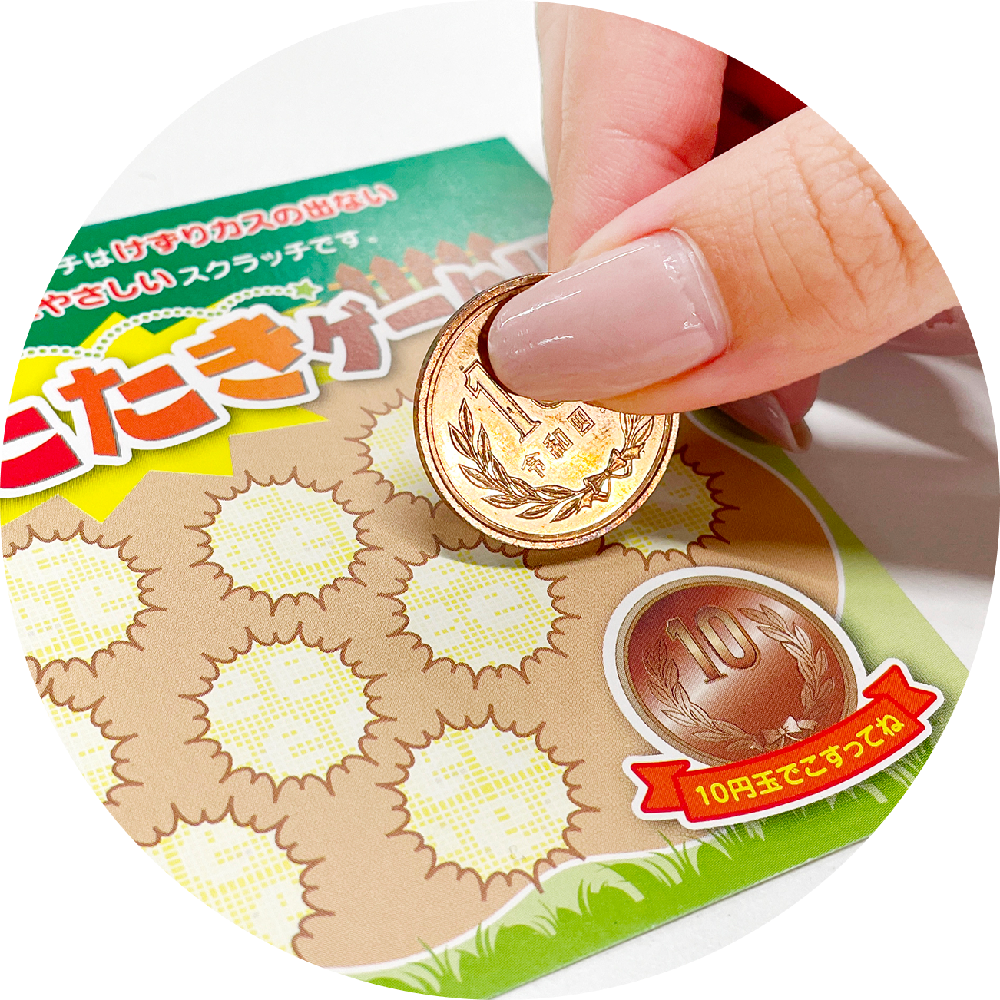
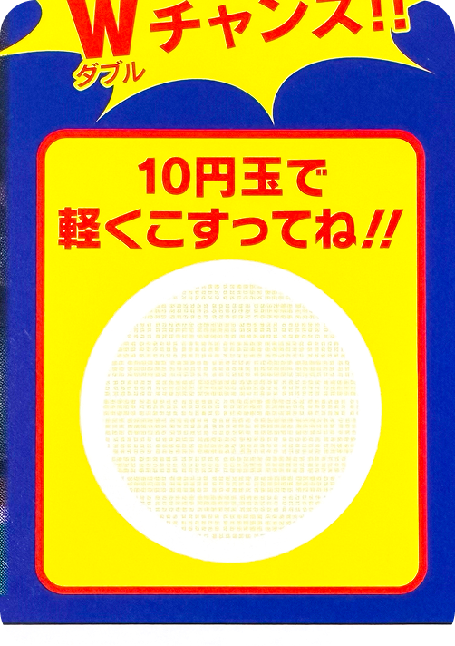
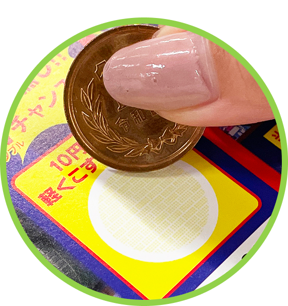
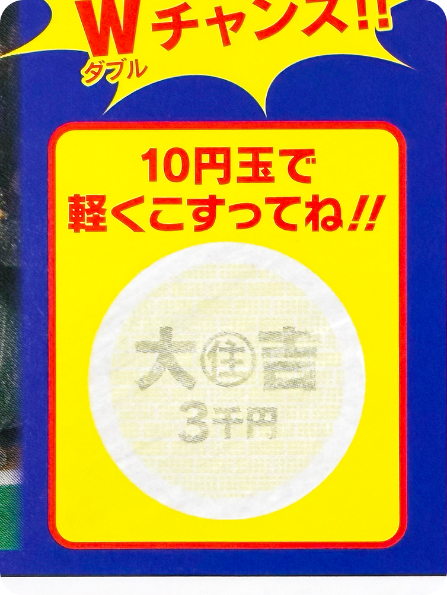
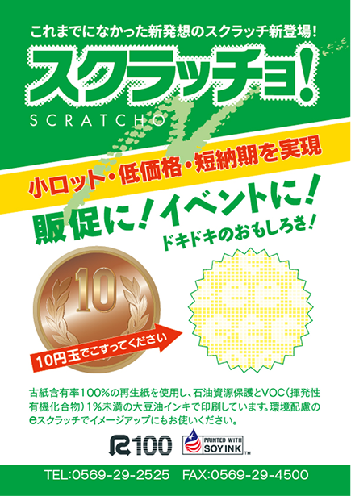
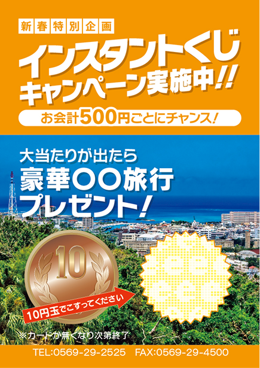
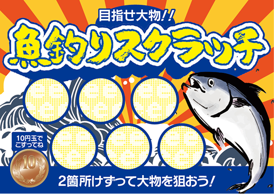
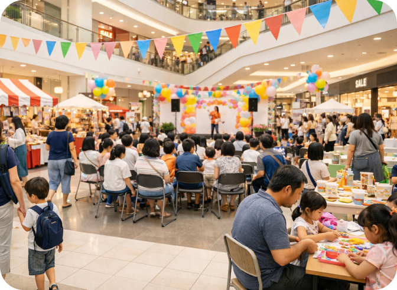
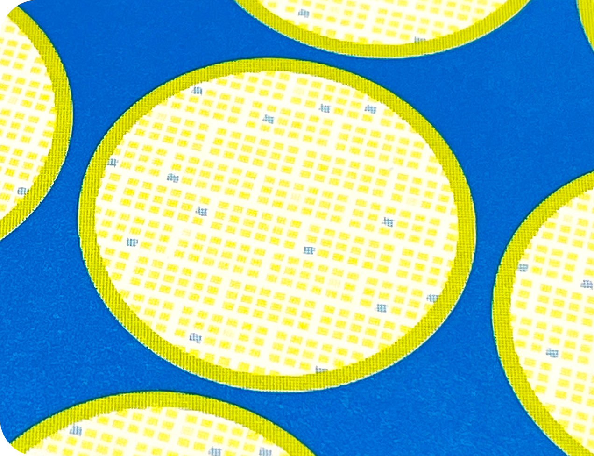

20260311-17回目
削りカスゼロだから
どんな場所でも安心してお使いいただけるスクラッチカードです。



▶︎
絵柄が現れる！




レストランやカフェ、居酒屋など、料理のあるところでも安心してお渡しいただけます。
病院やクリニック、歯科医院など衛生管理が必要な場所でも安心してご利用いただけます。

各種イベントや催事、展示会など子供から大人まで多くの方が集まる場所での使用にも最適です。
売上やファンづくりに
ダイレクトに効く！
白スクラッチは、銅に反応して色が浮かび上がる特殊なインクを使った印刷。スクラッチ面を10円硬貨でこすると、情報が浮かび上がります。
これまでの銀スクラッチとは違い、削りカスが出ないのはもちろん、デザインの中に自然に溶け込むのが大きな魅力です。中身を見えにくくするパターンを合わせて印刷することで、文字や番号もしっかりガード。紙面の色調やビジュアル設計に合わせた自然な仕上がりでデザインに馴染み、見た目がとてもきれいに仕上がるため、各種キャンペーン印刷物や、再来店クーポンとして多くの場面で選ばれています。

イラストレータ・またはPDFでデザインデータをご支給ください。
※スクラッチ部分は別データ（別レイヤー）にて作成くださいまずはお問合わせから。枚数・用途・デザインデータの有無などお知らせください。
お問合わせ後、お見積りをいたします。OKでしたら正式にご発注ください。
データをご支給ください。印刷内容とは別に、クジ（スクラッチの絵柄・文字）のデータが必要になります。
データチェック後、問題がなければ1週間〜10日程度で納品いたします。
隠蔽層の色が異なります。白スクラッチはデザインに馴染みやすく、背景色やブランドカラーに合わせた紙面設計がしやすいのが特徴です。見た目を自然に保ったまま隠蔽加工ができます。
カード、DM、チラシ、キャンペーン台紙、シリアルコードカード、応募券など、平面の印刷物であれば幅広く対応可能です。用紙やサイズについては仕様確認のうえ調整します。
白スクラッチはインキを削るのではなく、こすって情報が浮かび上がらせるスクラッチです。サンプルで仕様をご確認いただけます。紙ですので、あまり強くこすると破れる可能性があります。
四角形・円形・帯状などの基本形状のほか、レイアウトに合わせた設計が可能です。内容が読めない隠蔽面積を確保することが前提となります。
スクラッチ部分のサイズ、位置、下地の色、文字サイズなどに推奨設計があります。入稿前にガイドラインをご案内できますので、制作段階でご相談いただくとスムーズです。
内容と仕様によります。キャンペーン用途などで少部数対応が可能なケースもありますので、まずは部数・仕様をご相談ください。
量産前のサンプル作成やテスト印刷のご相談も可能です。スクラッチの仕様を事前に確認できます。
データチェック後、問題がなければ1週間〜10日程度で納品いたします。仕様・部数によって変わりますのでスケジュールには余裕をもってご相談ください。